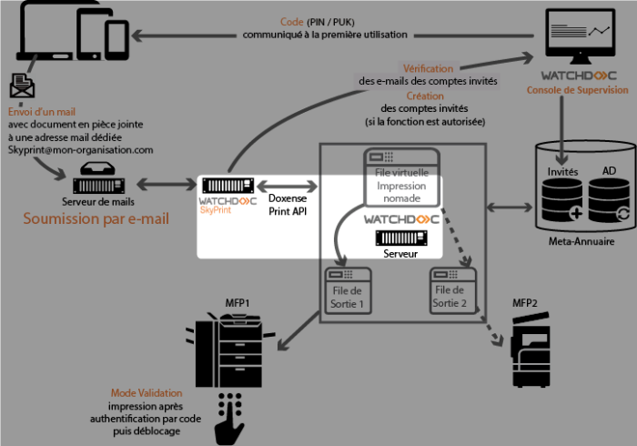
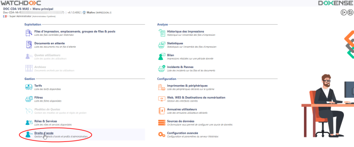
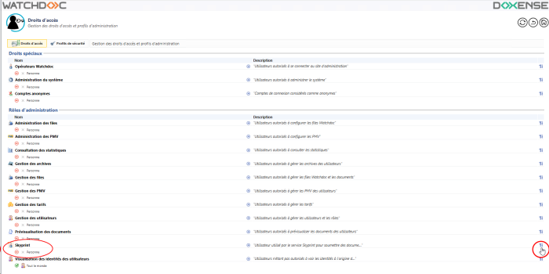
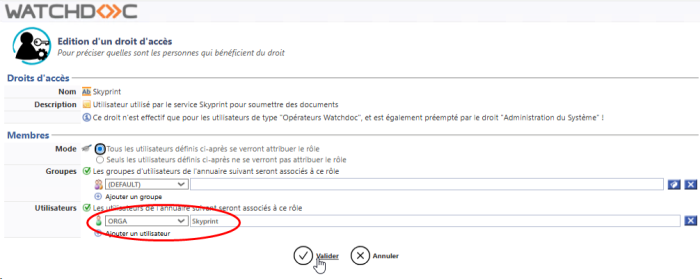
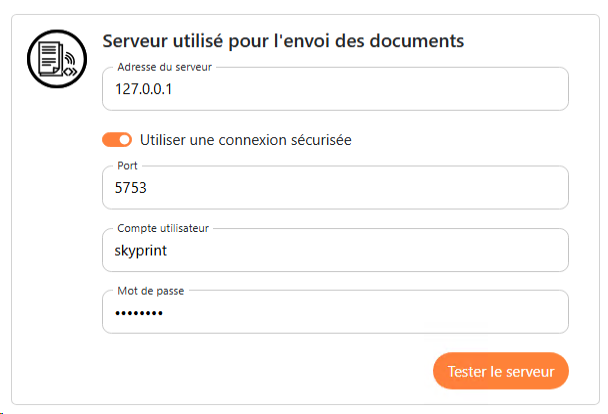
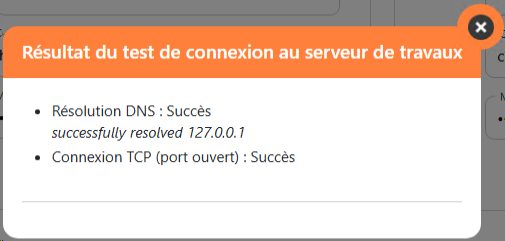

Watchdoc SkyPrint - Configurer le serveur d'envoi des documents
Présentation
Skyprint reposant sur un serveur Watchdoc, vous devez configurer la connexion entre Skyprint et ce serveur d'impression qui sera chargé d'envoyer les travaux vers les files d'impression (serveur d'envoi des documents).

Prérequis
Cette configuration requiert un compte utilisateur (login/mot de passe) doté du rôle d'administration Skyprint. Il est donc nécessaire de configurer ce droit d'accès au préalable dans Watchdoc.
Ce rôle Skyprint permet au compte utilisateur désigné de soumettre des documents à la Print API à la place d'un autre utilisateur. Ce rôle soumet donc les travaux d'impression de tous les utilisateurs Skyprint sans que ceux-ci aient besoin de s'authentifier.
Le compte utilisé pour endosser ce rôle peut être un compte utilisateur (ou administrateur) existant ouun compte utilisateur dédié. Dans ce cas, il convient de l'avoir créé au préalable dans votre annuaire d'entreprise.
Dans notre exemple, le compte appelé "skyprint", est un compte dédié préalablement configuré dans l'annuaire AD_ORGA.
Procédure
Attribuer le rôle d'administration Skyprint à un compte utilisateur dans Watchdoc
-
En tant qu'administrateur, accédez à l'interface d'administration de Watchdoc ;
-
depuis le Menu Principal, section Gestion, cliquez sur Droits d'accès :

-
dans la section Rôles d'administration, cliquez sur le bouton pour éditer le rôle Skyprint :

-
dans l'interface Edition d'un droit d'accès, section Membres, sélectionnez :
-
l'annuaire dans lequel se trouve le compte utilisé pour soumettre les travaux d'impression ;
-
puis le(s) compte(s) utilisé(s) pour soumettre les travaux d'impression de Skyprint à Watchdoc :

-
-
validez l'ajout de ce compte pour le droit d'accès Skyprint ;
-
rendez-vous dans Skyprint pour y configurer le serveur d'envoi des documents.
Configurer le serveur d'envoi des documents dans Skyprint
-
Accédez à Skyprint en tant qu'administrateur ;
-
dans le menu, cliquez sur Configuration de Watchdoc ;
-
dans la section Serveur utilisé pour l'envoi des documents, vous configurez le serveur d'impression Watchdoc chargé d'envoyer les travaux vers les files d'impression (via la Doxense Print API ):
-
Adresse du serveur : saisissez l'adresse (IP ou FQDN) du serveur Watchdoc
-
Utiliser une connexion sécurisée : activez le bouton si l'accès au serveur Watchdoc est sécurisé
-
Port : saisissez le numéro du port d'accès sécurisé à Watchdoc (5753 par défaut)
-
Compte : saisissez le nom du compte configuré avec le Droit d'accès Skyprint (configuré lors de l'étape précédente)
-
Mot de passe : saisissez le mot de passe du compte d'accès Skyprint (configuré lors de l'étape précédente).

-
-
Une fois les données saisies, cliquez sur le bouton Tester pour vérifier la connexion de Watchdoc Skyprint avec le serveur d'impression Watchdoc :

-
Si le test n'est pas concluant, vérifiez les valeurs saisies et corrigez-les ou vérifiez l'état du serveur Watchdoc. Si le test est concluant, cliquez sur le bouton Sauvegarder pour enregistrer les paramètres.
N..B : le bouton Tester vérifie les données de connectivité, mais pas la validité du compte d'accès. Il est donc possible que le test soit concluant mais que, dans la page Accueil, un message indique que le serveur n'est pas connecté.